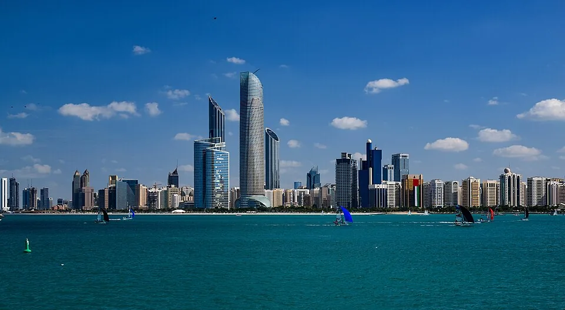

先把早上五点的工作安顿好
阿布扎比比北京时间慢四小时，也没有夏令时。北京9点开工，在这里是凌晨5点；北京18点下班，对应当地14点。如果需要整班同步，找房时就把睡觉和早会安排在前面，海滩和商场留给下午。
让住处拍一下实际使用的桌椅，看看清晨开灯会照到哪里，再问房间内能否通话。抵达后用公司的真实会议软件试一次完整通话，同时留好手机网络备选。这里的办公设施与网络尚无本站现场测试。
11月已经进入当地较温和的旅行时段。中国大陆普通护照的短期停留要对照已有入境记录，持续远程工作的安排另看适用居留资格。时差与季节说明。
单人30晚，20,350迪拉姆怎样安排
舒适档住房留15,500迪拉姆，五项生活费合计4,850，整月规划20,350迪拉姆。省钱档住房留11,400，宽裕档22,000，配合各自生活费，合计分别为14,845和29,600。住房与生活费都是找房前的支出计划，尚未对应指定日期的完整订单；机票、押金、保险与签证，以及未确认收费另备。
拿到覆盖全部晚数的房费后，用它替换住房预留，再看水电与清洁是否已含，避免重复留钱。每30晚去四次Cloud ADGM，按120迪拉姆日票另加480迪拉姆票面费用；整月工位的合同总额仍需询价。
Hafilat普通30天公交通票是95迪拉姆，自购买日起算，不含跨城线路。交通预留还给少量其他出行留了额度；30晚住宿通常横跨31个日历日期，到达和离开当天怎样坐车另作安排。公交通票条件。
- 单人住30晚的支出计划，住房与日常费用为预留；具体房费、税费及库存另确认。
- 总额包含所列预留和参考票价；未确认的税费与超量费用、机票、签证、保险及押金另计。
各项换算后都取整，总额则先加原币、再统一换算，因此逐项相加可能有一点差额。
| 项目 | 原币（AED） | 显示币种（CNY） | 依据与条件 |
|---|---|---|---|
| 住房预留 | 15,500 迪拉姆 | 28,144 元 | Newly Renovated Fully Furnished Superior One-Bedroom Apartment located in the heart of Abu Dhabi计价条件单人承担整间房的30晚住房预留；参照公开房型月价，指定日期含费总价另询。 30晚按一笔月价参照或住房预留规划，最终日期和含费范围仍须确认。 |
| 额外共享办公票 | 0 迪拉姆 | 0 元 | 预算预留计价条件不额外购买工位；房内网络及桌椅仍须实际确认。 |
| 餐饮与饮料 | 2,400 迪拉姆 | 4,358 元 | 预算预留计价条件单人30晚个人规划额度，按住法调整；非商家报价。 按所选30晚调整，不代表实际消费。 |
| 市内交通 | 650 迪拉姆 | 1,180 元 | Hafilat Smart Cards: Public Transport Passes计价条件30晚交通预留，95迪拉姆通票只是其中一种参照，其余留给接驳与其他市内出行。 按所选30晚调整，不代表实际消费。 |
| 水电与住房杂费 | 300 迪拉姆 | 545 元 | 预算预留计价条件水电及住房杂费预留；最终房费已含的项目从此行扣除，避免重复。 按所选30晚调整，不代表实际消费。 |
| 手机、洗衣与日用品 | 300 迪拉姆 | 545 元 | 预算预留计价条件单人30晚个人规划额度，按住法调整；非商家报价。 按所选30晚调整，不代表实际消费。 |
| 休闲与机动 | 1,200 迪拉姆 | 2,179 元 | 预算预留计价条件为周末活动和临时生活杂费留额度；不替代押金、保险或换房备用金。 按所选30晚调整，不代表实际消费。 |
| 总计 | 20,350 迪拉姆 | 36,950 元 | 按原币总额统一换算 |
能做饭的Studio与一卧公寓，连日期和含费范围一起比
Nasma Homes的Nasma 1 Studio页面列11,400迪拉姆/月，月价从30晚适用，最多住两人；设施说明包括厨房和洗烘设备，也列有Wi-Fi与每周清洁。面积与完整街道地址没有写明，应在询价时取得具体楼栋和房号，再判断位置与工作桌是否合适。查看房型与月价。
这笔月价没有对应11月的指定房态。Nasma条款说明，确认前价格与适用税费可以变化，押金可能收取但未列金额；付款、取消及退款条件随预订确认。网站的Available标签和全城景点列表，都不能替代这间房的日期与位置确认。查看预订条件。
想把睡觉与工作分在不同空间，可比较Al Nakheel的一卧酒店公寓。其Bayut运营方账号的Superior房型详情列592平方英尺、15,500迪拉姆/月起，含税费与VAT，限新预订、须预付全款，可住一至两名成人。优惠写适用于截至2026年11月30日的入住；若你想11月1日住到12月1日，仍需确认最后一晚与离店日是否在范围内。账号列表与详情曾显示不同价，以具体房型和日期的书面报价为准。看房型详情。
其他低月价要连着有效期读。Radisson Corniche的5,999迪拉姆优惠，条款已把入住截止日列在2026年9月30日，不能作11月房价。Dusit Thani的Studio每月12,500迪拉姆起则属于年约，页面的“++”与含税条款也要让酒店逐项列清；同页写至少30晚，并不能把年约月价套给一次月住。Radisson活动条款 · Dusit年约与长住条件。
白天日票和清晨门禁，要问两件事
Cloud Spaces ADGM在Al Maryah Island，Cloud Coworking日票为120迪拉姆/人，含共享区、Wi-Fi与两杯咖啡。每30晚去四天，票面合计480迪拉姆；税费与当天可用时段另确认。它的会员区虽然有24小时使用说明，也不能直接套到这张日票上。看日票，看ADGM分店。
Servcorp WTC热桌月费720迪拉姆，页面也列99迪拉姆/日起的短期热桌。标准月会员在营业时段使用，24小时是可选项。房间早会结束后才出门工作的人，可以比较日票；要把5点早会搬到工位，就得确认自己的具体票种是否能在这个时间进门。
Servcorp按月滚动，页面另列一次性设立费500迪拉姆。退订要求提前一个完整日历月通知，月中通知会在下一个月月底结束；只来30晚的人，买票前就应把最终收费与结束日期问清。热桌用信用卡支付不收押金，转账则需要押金。首月免费宣传还须连着这些条件核对，预算没有按免费处理。看WTC价格，看设立费与退订说明。
会议软件也影响住法。阿联酋TDRA允许的通话应用名单列有Microsoft Teams、Zoom和Google Meet的会议功能；具体公司的账号与房间网络仍要试。先用日票完成一场正常会议，再决定是否签月会员。查看官方通话应用说明。
在ADGM办公，日票已含两杯咖啡
去Cloud ADGM工作的那天，120迪拉姆日票已经含两杯咖啡，安排当天饮料开销时可以把这两杯算进去。它同时买到共享办公区的使用权；电话或视频会能用哪个位置，仍按分店规则安排。在普通咖啡馆长时间用电脑，入店时问清安排；通话也按各店规则选择位置。
0家符合条件
没有符合这组条件的地点，换一个筛选试试。


Corniche、WTC和Al Maryah，按工位选房
把实际考虑的住处与工位保存到同一张地图。下面保留两个有完整官方地址的工位；住房的具体楼栋与出入口应随报价取得，再查你一周会重复走的路线。这里没有经过核实的步行分钟数。
- Servcorp World Trade Center：Khalifa Bin Zayed the First Street，World Trade Center 17层。
- Cloud Spaces ADGM：Al Maryah Island，Al Sarab Tower 11、14和15层。
地点名单可直接使用；底图需要网络。
免签短停和远程工作居留，分别确认
中国驻阿联酋使馆2025年4月14日公告写明，中国公民持有效期六个月以上普通护照可免签入境，每180天累计不超过90天。公告按首次入境之日起算180天；已经去过阿联酋的人，要把此前记录一起对照，按实际获准截止日订离境安排。阅读使馆公告。
计划在当地持续远程工作，还须确认与活动相符的资格。ADRO的远程工作居留介绍为一年、自担保，服务阿联酋境外实体，月收入至少3,500美元或等值，并列出境外工作证明及最近六个月银行流水。查看ADRO条件。
ADRO详细页还写明，目前不能通过该办公室提交这类提名请求。ICP另有公开的远程工作签证服务卡，列境外远程雇佣证明和相应收入证明；公开页面存在，不等于个人申请已获受理。按自己的护照和居住地向主管机关确认材料及办理渠道，再决定长住付款。查看ICP服务卡。
11月可多安排户外，清晨工作另顾保暖
阿布扎比旅游局把11月至4月概述为较温和的旅行季；气候专页则把12月至3月中旬列为冬季。11月处在热季退去之后，适合把下午留给户外，不过这些季节介绍不能保证你到达那一周的天气。看当地季节说明。
如果按当地5点开工，室内照明和空调温度要按清晨的使用习惯确认。白天准备轻便衣物，进入空调房再留一件薄外套。出发前看当天预报与空气监测，住房是否需要为特殊日期另价，也随实际入住范围一起问。
一家人的5,200迪拉姆月租，续期又收到了新价
Reddit用户BelongTogether_27自述，一家人从2026年4月起住在阿布扎比家具齐全的一卧酒店公寓，月租5,200迪拉姆。作者说，10月15日收到管理方通知，要求从11月2日起收6,400迪拉姆；作者希望新价再晚一些生效。
这段经历留下了一个订房时就能问的问题：只住这次日期，与以后想续一个月，价格是否相同；变价会提前多久通知。作者没有公开酒店名和家庭人数，也没有列完整的水电、清洁或押金条件，不能拿这笔家庭月租替代你的单人询价。阅读作者主帖。
能否接受五点开工，比城市标签更影响这一趟
需要每天和北京同事整班同步，就先按当地5点至14点排一遍睡觉和工作。若只需要参加几场北京下午的会议，可用的本地时段会宽一些；两种工作方式，对房间和工位的要求不同。
继续看其他城市时，可以从吉隆坡月住指南和杭州月住安排接着比较。两地与北京时间相同。把人数与整间房口径保持一致，再看自己愿意为房型、位置和办公多留多少预算。
把三十晚和凌晨通话写进询价
把真实入住和离店日期、一个人承担整间房写清楚，让住处按同一房型列完整房费及额外收费。看到“每月起”，同时确认优惠有效日与合同期。
下方文字会随晚数更新，由你复制后自行发送。请再补上当地凌晨5点需要视频通话，问房间能否关门、桌椅是否可用，并索取这间房当前的照片。若之后可能续住，也把续住价怎样确认一并问清。
订房与买票前，几件容易算错的事
买了日票，就能凌晨5点进去吗？
要看自己的票种和分店时段。Cloud的120迪拉姆是日票价；会员区的24小时说明不能直接套到这张票上。Servcorp标准热桌按营业时段使用，24小时是可选项。
旧文章写酒店每晚再收15迪拉姆，要直接加吗？
阿布扎比政府2023年公告已取消每房每晚15迪拉姆的市政费。具体酒店仍要列明税费名称和金额，不能把旧数字固定加到30晚账单。
只买一个月Servcorp，最后就只付720迪拉姆吗？
720迪拉姆是热桌月费。另有500迪拉姆设立费，税和退订日期也会改变总账，月中提出终止，FAQ写会在下一个月月底结束。签约前把最终收费问清。
公交月票该按80还是95迪拉姆准备？
普通30天通票按95迪拉姆比较，自购买日起30天。80迪拉姆是列明社会支持机构受益人的补贴票，普通访客不默认适用。
免签停留够用，就可以持续远程工作吗？
短期入境与远程工作居留分别核对。把境外雇主、实际工作和停留日期说明给主管机关，确认适用资格后再安排长住。
价格出处与图片署名
作者：Roamorrow 编辑部。本文链接不收取返佣。预算预留、公开价格与具名经历在对应段落说明；房型和含费范围按自己的日期确认。
价格与资料出处
- Abu Dhabi FAQs: time and weather sections · 2026-10-27
页面夹有旧交通、税费及营业周文字，本轮只引用时区与气候概述；不采用该页旧公交或税费。
- Coworking Day Pass · 2026-10-27
日票不是月票；不能把120乘30称月价。税和日票可用时段未列全，会议室/通话间及押金也未列全。
- Abu Dhabi Global Market (ADGM) · 2026-10-27
不能据单位不明的会员数字直接设月票预算；购买时按分店确认税费、合同期和24/7适用票种。
- FAQs: Coworking · 2026-10-27
提前一整日历月书面退订；信用卡与转账的押金条件不同。WTC设立费金额在分店价格页列明。
- Hafilat Smart Cards: Public Transport Passes · 2026-10-27
卡本身费用与完整路线未核，机场/特殊线路适用及实时班次也未核；不保证住处到工位通勤时长。
- Stay More, Save More · 2026-10-27
活动条款列预订期2026年6月17日至8月31日，入住截至9月30日，最低30晚；5,999迪拉姆不可当11月现价。
- Extended Stay Offer · 2026-10-27
租期与含税展示内部存在不一致；不能把年约月均价当成独住30晚报价，也不将417夜价乘30。
- Coworking in Abu Dhabi | World Trade Center · 2026-10-27
热桌720迪拉姆/月、设立费500；税费、实际使用期间与终止后的总账另确认。
- Internet Guidelines · 2026-10-27
不保证具体酒店网络、公司账户或任何其他通话应用可用；没有现场测速或通话实测。
- 阿联酋调整对中国公民免签入境停留期限 · 2026-10-27
原文日期2025-04-14。 公告不授予远程工作资格，不能把旅游短停与远程工作居留合并。
- Remote Work Visa · 2026-10-27
不能将ADRO提名渠道不可用写成全阿联酋暂停签证；ICP另有公开服务卡。
- Issuance of Visa Virtual Work Residence (Virtual Work Employee) · 2026-10-27
原文日期2024-12-11。 卡片内容标最后更新2024-12-11，2026-10-27实读；未登录办理，不能保证申请当前可提交或获批。
- Weather in Abu Dhabi · 2026-10-27
一般气候介绍，没有样本期和11月逐日预报，不用于保证连续晴天或空气质量。
- Monthly rental renew · 2026-10-27
家庭人数和酒店名未完整披露；面积及单月合同或长期续租细节，以及水电税费清洁和押金也未完整披露。
- Looking for good hotel apartment options in Abu Dhabi: Rude-Equivalent4719 reply · 2026-10-27
金额有k简写，其中4.5原文未附k；币种也未逐条写明。人数与房型未知，税水电和精确日期也未知，不进入预算模型。
- DCT Abu Dhabi revises hotel fees · 2026-10-27
原文日期2023-08-11。 是2023年的官方变更公告；不能单据它拼出某家酒店2026年订单最终总税率。
- Studio Apartment — Nasma 1 · 2026-10-27
面积和完整街道门牌未列；Abu Dhabi城市归属为商家自标，未核地图精确位置。
- Terms & Conditions — Nasma Homes · 2026-10-27
不能称11,400为含税、水电、押金全包30晚账单。
- Newly Renovated Fully Furnished Superior One-Bedroom Apartment located in the heart of Abu Dhabi · 2026-10-27
原文日期2026-06-26。 按月标签未定义精确30晚起止日；11月1日入住12月1日退房是否完整落在有效期，须商家确认。
- Al Nakheel Hotel Apartments — active listings · 2026-10-27
根流程此前在同网址读到过10,500卡片，原因未确定；保留早先观察，不抹去差异。
- Remote Work Visa (alternate ADRO route) · 2026-10-27
同机构页面说明详略不同，不能选择较短清单当全部材料已齐。
- 阿联酋央行VAT参考汇率 · 2026-10-26
采用2026年10月26日阿联酋央行VAT参考值，1人民币=0.55074迪拉姆；仅作规划换算，不是银行成交价。
住了45天以后，有人又换了一家酒店
Reddit用户Rude-Equivalent4719在讨论酒店公寓时写，自己在Jannah住了45天，随后转到Al Nakheel，经Booking订了13天。作者把不同租期的费用写在同一条评论里，但没有说清入住人数和房型，也没有拆出税费与其他包含项，不能据其中一笔推算你的30晚支出。
如果想先短住再延长，问房时可以分别要这两段日期的报价，并问清能否留在同一房间。短住结束后的余房和续住价都需要确认，不要把长住折扣提前算进尚未确定的后半程。阅读Rude-Equivalent4719的原评论。